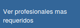
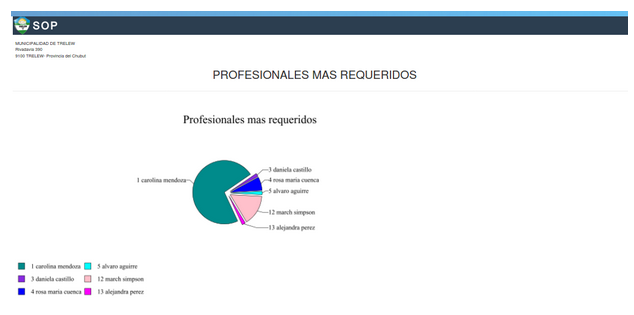
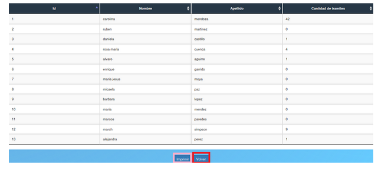

Ver profesionales mas requeridos¶
  Permite ver los profesionales con mas tramites. En caso de que el usuario quiera volver al menú principal, deberá presionar el botón “Volver” que está enmarcado en rojo. También el director puede exportar a formato PDF el reporte pulsando el botón azul “Imprimir” que está enmarcado en rosa.